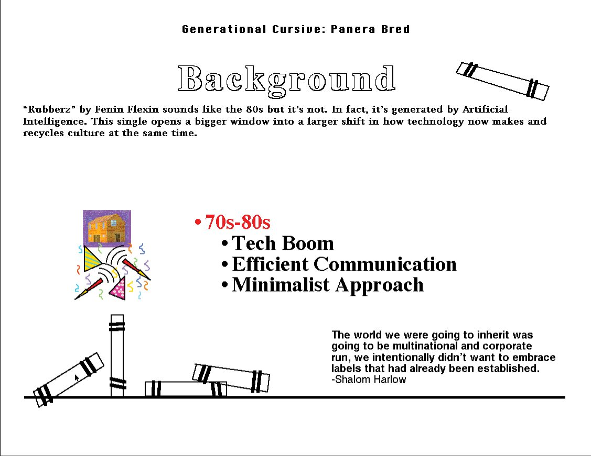
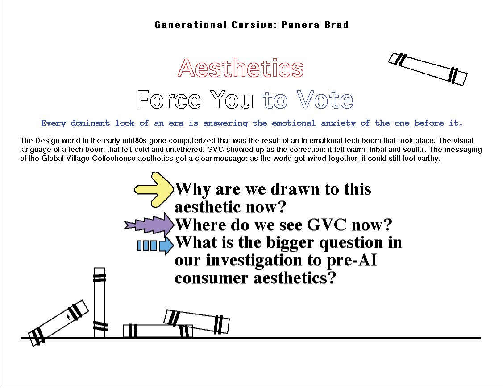
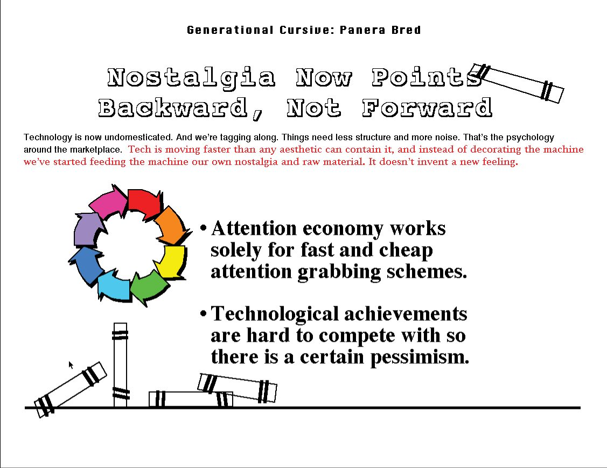
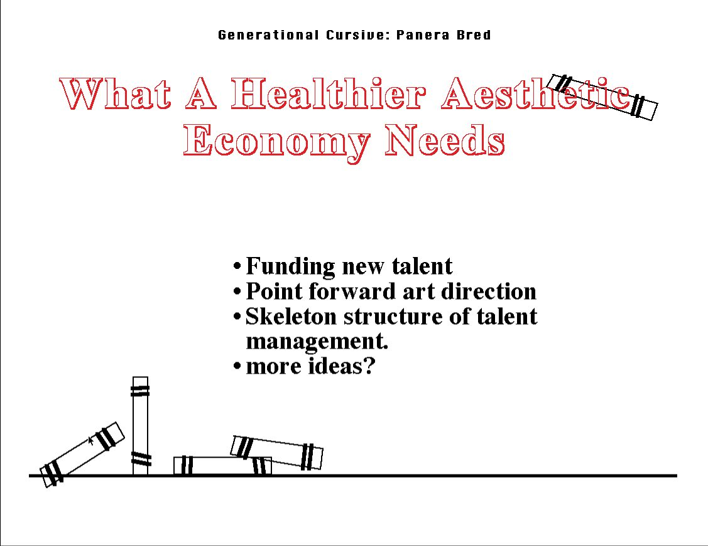

Deepfakes of Culture:Evolution of Tech andConsumer Aesthetics
Each aesthetic movement is a response to an emotional concern in previous periods. Whether mod vs hippie or indie sleaze vs clean girl, aesthetics influence how we feel safe in the current moment. However, the speed and creators of aesthetic movements are changing.

The song ‘Rubberz’ by Fenin Flexin has a very 80s aesthetic, however, it is created using AI. This aesthetic is a deepfake of 80s culture. From just one piece of media we can see how quick culture is being created, and re-created through technology.
In the 80s, aesthetics were sleek, digital, and mechanical with lots of chrome, grid patterns in neon colours and Memphis style furnishings. The Global Village Coffeehouse was a response to this aesthetic. It used handmade elements, and nature. It promised that despite globalisation connecting everyone together, we would be able to maintain a grounded, tribal, warm and soulful energy. Despite a high level of efficiency, there was a conscious effort made to ensure globalisation also had heart. This coffeehouse made us feel as though globalisation would not take away from our humanity.
Grunge allows this process to be clearly seen. In the late 80s/early 90s, people creating grunge saw that the world was shifting rapidly in a direction towards international, corporate, and top-down branded aesthetics. As a result, people creating grunge chose an aesthetic in opposition to this. The aesthetic was very basic, including items such as flannelette, and second hand clothing. People intentionally avoided labelled items. This demonstrates that when we create an aesthetic, we must take a stance. We cannot wear an aesthetic without taking a side.
Traditionally, nostalgia in this system means continuity. When we experience a nostalgic moment, whether this be a song, smell, or space, we feel as though we are experiencing continuity in time.

We have lived through it and a previous aesthetic’s promise has been fulfilled, validated, respected or lamented. Nostalgia gives proof of progression, and this sentiment cannot be faked as it requires time to pass.
Darker Implications
Although the Global Village Coffeehouse aesthetic, in retrospect, was very appropriation filled, and cynically profit driven, it was at least looking forward to brighting, innovative, and empathic futures. While the mural
on the wall was slightly deceptive, it was deceptively looking forward. The aesthetic movement we are experiencing now, however, is not looking forward, but backwards. It is also focused on capturing attention, rather than optimism.
Technology is no longer tame. Previously, we could tame technology into aesthetics. We could fit it into our

coffeehouses, and turn it into beautiful, defined pieces of furniture. However, now, technology is moving much faster than any aesthetic can keep up with. In order to capture attention from this new technology, we are feeding it our nostalgia. It no longer needs to create new sentiments as it is cheaper, quicker, and more profitable for it to simply create a rehash of old, trusted sentiments. Rehashed 80s synth sounds, Y2K
cellphone bleeps or fonts from mid-90s VHS tapes are all quickly turned into new products. As the attention economy is driven by quick and easy methods of gaining attention, and the technological achievements which allow this are so difficult to compete with, it is easy to feel pessimistic about the current state of things. We are moving towards less structure and more chaos. Psychologically speaking, we are no longer in a free marketplace of ideas; we are in a feral battlefield of attention. Using our memories as the ammunition, they are being re-purposed so quickly that we struggle to determine whether or not they are truly our own.
Demented Present
While this title may be taken to be offensive, I use it almost clinically. Dementia is not a lack of memory, but a lack of contextual memory. We know we have seen a person before, but we can’t place them, or we can identify a feeling but do not know what exactly it is. Culturally, we are suffering from a similar problem. While we can recognise the feeling evoked in us (80s sadness, optimism of the early internet, comfort of the Global Village coffeehouse), we
no longer have the context of these feelings. Due to the number of times we have encountered each visual/art piece, we no longer need to know the context. Algorithms can simply trigger a feeling of
a certain type. We are matching patterns to memories which were never really ours.
Information Flow
As there is less structured, unbiased journalism, the objectivity of journalism that does exist is reflective of our culture suffering from dementia. Decentralised economic models have caused decentralised broadcasting. These broadcasts are becoming less and less related to anything. As a result, meanings become lost and visuals lose context. Emotional reactions of
people become reduced to data and re-purposed. Therefore, the ultimate form of entertainment may be vibe coding. We are able to instantly generate the feeling we want, without working for it.
Claude also fits into this. For some reason, the aesthetic used in Claude feels very subtly human. Once again, this aesthetic is quietly trying to get us to take a side. As in every period, opposing aesthetics exist in this period. Some of these aesthetics come from machines.
The process of machine production feels demented due to the fact we know we simply lack the motivation to create a fresh scent of talent. Creating a fresh aesthetic, sound and promise for the future is extremely difficult. It can take years to create, require failure, and an audience willing to be confused before they become charmed. It is far easier, for a musician, platform or AI product to simply recycle from the same pool of trusted feelings. With every re-purposing of these feelings, however, they become slightly more diluted. We are diluting our own small pleasures, and wasting the emotional inheritance we have, rather than earning a new one.
What changes would need to happen in order to improve this aesthetic economic

situation?
Invest in new talents. Create forward-looking art direction. Provide structure in talent management. And think up more ideas!
The presentation was created in ClarisWorks on MacOS 8. As it was created via infinitemac.org. This article was extracted from a speech given on the 13th August 2026.